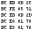

| Resource page for hexdump 1.8 |  | 24 Aug 2015 |
Dump binary files in a CP/M-like hex format.
Yes, it's yet another textual hex dumper for people who think od -x output is ugly. This one produces a nice CP/M-like format by default and can do EBCDIC. It's internationalized, too. Has many optional formatting functions.
| COPYING | project license |
| hexdump-1.8.tar.gz | gzipped source tarball |
| NEWS | project news |
| README | roadmap file |
| hexdump.html | HTML rendering of hexdump.1 |
The project repository is at http://thyrsus.com/gitweb/?p=hexdump.git.
Project statistics are available at OpenHub.
If you appreciate this code (and especially if you make money by using it) please support me on Patreon.
Administrivial release; Gitorious is dying, project metadata must change.